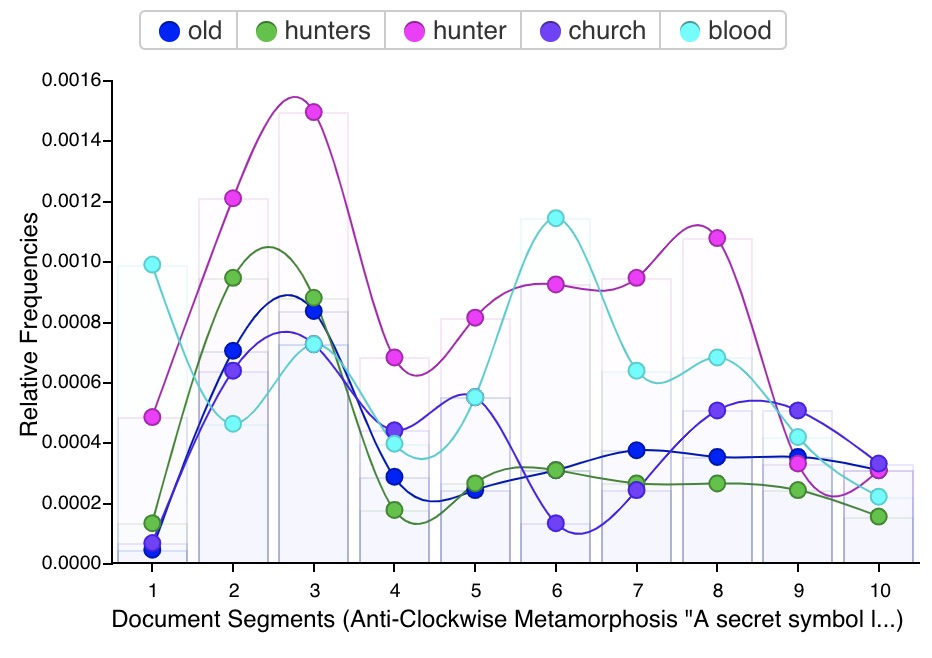
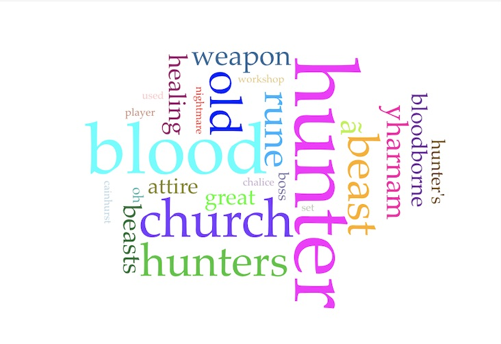

This shows just the sheer amount of Items within the game as a fun visual aid! As you could see attire has more items by more than double of everything else.
Analysis of Item numbers:
Across Bloodborne there are several different types of items and we categorized them as seen below. From the graph there is an obvious difference in the amount of attire items compared to any other item in the game. This can be seen as FromSoft allowing players the ability to role play as whatever character they wish. Furthermore, it allows for different play styles much like the weapons in the game. The graph shows that there are 26 weapons, but in reality, there is double that since each weapon has a transformed state. Looking at the lowest number of items tools and weapon buffs it sparks interest that a game focused on combat would have so few weapon buffs. However, this is because these items directly add attributes to weapons like fire or lightning. While there are consumables that give players increased stats that affect damage of weapons, speed, etc.
Analysis of Items Per Location:
Due to the large amount of items and some items being able to be found in multiple locations we were unable to account for all of them. Based of the information we did use, you could see a majority of items fall under the Cathedral Ward, Hunter's Dream, and Hunter's Nightmare. Many of the items found in the game are in stores that can be found in the Hunter's Dream, but due to there being no lamps within due it being a hub area. Furthermore, due to inaccurate location tagging this graph is incomplete as of now.
Analysis on Word Count:
Based off of the word cloud and frequency graph, Hunter is the most used word with 376 times of recurrence. Words like blood, church, old, hunters, beast, rune, etc also repeat for over a hundred times. These words aren't a surprise to be the most common as the game is focused around the Hunters, the Healing Church, and their blood transfusions. It is a shock that old is the top word, but due to the references to the old gods and old blood within the game it's understandable.

